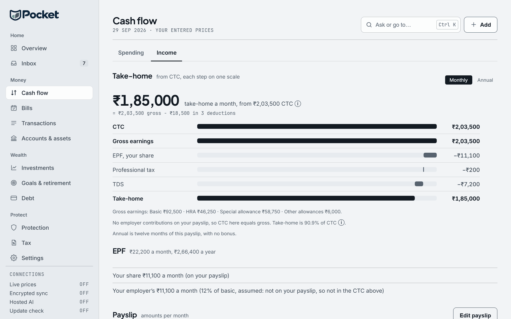

From CTC to take-home pay, worked through
- Category
- Salary · FY 2026-27
- By
- Reviewed
- Read
- 4 min
What a CTC is made of
| Part | A month | Paid to you |
|---|---|---|
| Basic | ₹50,000 | yes |
| House rent allowance (HRA) | ₹25,000 | yes |
| Special allowance | ₹33,000 | yes |
| Other allowances | ₹2,000 | yes |
| Employer's PF | ₹6,000 | no: into your PF account |
| Gratuity | ₹2,405 | no: set aside, paid on leaving |
| CTC | ₹1,18,405 |
Basic decides much of the rest. PF is 12% of it from each side, and gratuity about 4.81% of it (15 days' basic for each year of service). The HRA exemption in the old regime is worked from it too; see HRA exemption, worked through.
One month, from CTC to take-home
- CTC₹1,18,405
- Employer's PF, 12% of basic−₹6,000
- Gratuity, 4.81% of basic−₹2,405
- Gross pay₹1,10,000
- Your PF, 12% of basic−₹6,000
- Professional tax−₹200
- Income tax (TDS), new regime−₹3,900
- Take-home₹99,900
The income tax in it
The employer deducts each month a twelfth of the year's tax on the salary.
Here the gross is ₹13,20,000 a year; in the new regime, less the standard deduction of ₹75,000, the taxable income is ₹12,45,000. The slab tax on that is ₹66,750, but it is just above the ₹12,00,000 rebate limit. Marginal relief therefore holds the tax to the ₹45,000 above it: with cess, ₹46,800 a year, ₹3,900 a month. Your own PF share and professional tax are not deducted in the new regime; in the old regime your PF counts towards 80C and professional tax is deducted.
The year
- CTC₹14,20,860
- Gross pay₹13,20,000
- Income tax (TDS)₹46,800
- Take-home₹11,98,800
How Pocket works it out
Pocket's Cash flow page, on its Income tab, takes the lines of one payslip and shows them on one scale.
They are CTC, your employer's contributions, gross earnings, your PF share, professional tax and TDS, then take-home. It shows them by the month or for the year (twelve months of that payslip, with no bonus). A payslip with no employer contributions has a CTC equal to its gross, and the page says so. Your PF share goes to the Tax page's 80C. It is a planning estimate, not a tax return: the Income Tax Department and a chartered accountant have the final word.

- Take-home as the sum it is: gross pay less its deductions.
- The employer's share of EPF, marked assumed when the payslip has no line for it.
Questions
Why is take-home less than CTC ÷ 12?
CTC includes what the employer pays in for you but not to you (its PF share and gratuity). Pay is then reduced by your own PF, professional tax and TDS. In the example, ₹1,18,405 of CTC a month is ₹99,900 in hand.
How much PF comes out of a salary?
12% of basic from you and 12% from your employer: on a basic of ₹50,000 a month, ₹6,000 each.
Is there tax on a salary of ₹13,20,000 a year?
In the new regime, ₹46,800, after marginal relief: its taxable income of ₹12,45,000 is ₹45,000 above the ₹12,00,000 rebate limit, and the tax is held to that, plus cess.
Is gratuity paid every month?
No. It is set aside, and paid on leaving after at least five years of service.
Sources
- Income Tax Department: the Acts, rules, circulars and its own tax calculator, at incometaxindia.gov.in
- Income-tax Act, 2025, which replaces the Income-tax Act, 1961 from 1 April 2026 (FY 2026-27); the 1961 Act's section numbers are given too, as most forms and payslips still use them
- Finance Act, 2025: the new regime's slabs and the ₹12 lakh rebate, from FY 2025-26; and Finance Act, 2026 (Budget 2026), which left the slabs, the rebate and the surcharge as they were for FY 2026-27
- Employees' Provident Funds and Miscellaneous Provisions Act, 1952: PF at 12% of basic from each side
- Payment of Gratuity Act, 1972: 15 days' wages for each year, after five years of service
- Income-tax Act, 1961, section 192: TDS on salary
Pocket is free on Windows, macOS, Linux and Android, and keeps everything on your own device: download Pocket.